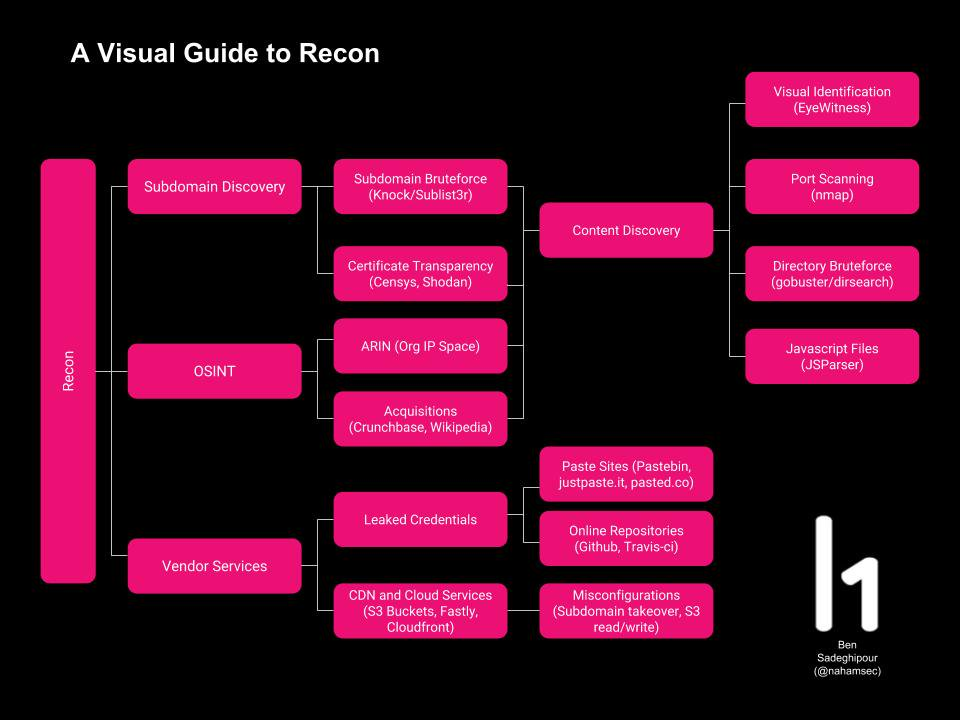

-
Ideally you’re going to be wanting to choose a program that has a wide scope. You’re also going to be wanting to look for a bounty program that has a wider range of vulnerabilities within scope.
-
Mining information about the domains, email servers and social network connections.
Bug Bounty Hunting Tip #1- Always read the Source Code
1. Sumdomain Enumeration
Enumerate Subdomains
Web Tools: https://pentest-tools.com/ https://virustotal.com/ https://www.shodan.io/ https://crt.sh/?q=%25taregt.com https://dnsdumpster.com/ https://censys.io http://dnsgoodies.com
Tools:
https://bitbucket.org/LaNMaSteR53/recon-ng https://github.com/michenriksen/aquatone https://github.com/aboul3la/Sublist3r https://github.com/rbsec/dnscan https://github.com/Cleveridge/cleveridge-subdomain-scanner
Screenshot Tools
- webscreenshot
Make sure to install PhantomJS too.
$ git clone https://github.com/maaaaz/webscreenshot.git
-
Once this is done, we use a tool called epg-prep (https://www.npmjs.com/package/epg-prep) to create thumbnails to do so, simply run: epg-prep uber.com This will allow us to view the created pictures using express-photo-gallery.
-
In a final step, use the express-gallery-script from the bottom of this blogpost and save it as yourname.js. All you need to do is to change the folder name inside the script: app.use('/photos', Gallery('uber.com', options)); the folder name in this case is set uber.com but depending on which target you look at it may be different. Once you’ve done that you can simply run the script using node yourname.js. This will create a webserver listening on Port 3000 with an endpoint called /photos. So to access this you simply type: http://yourserverip:3000/photos to get a nice overview of the subdomains you have enumerated
System Tools apt update && apt upgrade curl -sL https://deb.nodesource.com/setup_6.x | sudo -E bash - apt install -y git wget python python-pip phantomjs xvfb screen slurm gem phantomjs imagemagick graphicsmagick nodejs
Requirements for WebScreenshot
pip install webscreenshot pip install selenium
Requirements for express-photo-gallery
sudo npm install -g npm npm install express-photo-gallery npm install express npm install -g epg-prep
Requirements for Aquatone
git clone https://github.com/michenriksen/aquatone.git cd aquatone/ gem install aquatone
express-photo-gallery Script
JavaScript var express = require('express'); var app = express();
var Gallery = require('express-photo-gallery');
var options = { title: 'My Awesome Photo Gallery' };
app.use('/photos', Gallery('uber.com', options));
app.listen(3000);
Sublist3r
$ git clone https://github.com/aboul3la/Sublist3r.git $ cd Sublist3r $ sudo pip install -r requirements.txt
alias sublist3r='python /path/to/Sublist3r/sublist3r.py -d '
alias sublist3r-one=". <(cat domains | awk '{print \"sublist3r \"$1 \" -o \" $1 \".txt\"}')"
dirsearch
$ git clone https://github.com/maurosoria/dirsearch.git $ cd dirsearch/db $ wget https://gist.githubusercontent.com/EdOverflow/c4d6d8c43b315546892aa5dab67fdd6c/raw/7dc210b17d7742b46de340b824a0caa0f25cf3cc/open_redirect_wordlist.txt
alias dirsearch='python3 /path/to/dirsearch/dirsearch.py -u ' alias dirsearch-one=". <(cat domains | awk '{print \"dirsearch \"\$1 \" -e \"}')" alias openredirect=". <(cat domains | awk '{print \"dirsearch \"\$1 \" -w /path/to/dirsearch/db/open_redirect_wordlist.txt -e \"}')"
Steps to take when approaching a target
1) Verify target’s scope (*.example.com)
2) Run Sublist3r on example.com and output all findings to a file called output:
$ sublist3r example.com -o output ... $ cat output foo.example.com bar.example.com
3) Check which domains resolve
Use httprobe $ cat output | httprobe | tee -a domains
4) Run webscreenshot on the domains file
$ python webscreenshot.py -i domains output example
5) Run dirsearch on the domains file
$ dirsearch-one
6) Check for open redirects using dirsearch on the domains file
$ openredirect
3. Port Scan
a) Masscan - https://github.com/robertdavidgraham/masscan b) Aquatone - Use aquatone to scan the subdomains and then use it for scanning the ports you have options to Scan ports like common/large/huge
-
Scan each individual IP address associated with their subdomains and having the output saved to a file
-
Look for any services running on unusual ports or any service running on default ports which could be vulnerable (FTP, SSH, etc). Look for the version info on services running in order to determine whether anything is outdated and potentially vulnerable
4. Extracting vhosts
Tools: https://pentest-tools.com/information-gathering/find-virtual-hosts https://github.com/jobertabma/virtual-host-discovery Screenshot Tools : Planing to Move faster try https://github.com/ChrisTruncer/EyeWitness httpscreenshot https://github.com/breenmachine/httpscreenshot/
- Look at the headers to see which security options are in place, for example looking for presence of X-XSS-Protection: or X-Frame-Options: deny.
- Knowing what security measures are in place means you know your limitations.
-
Look out for WAFs, you can use WafW00f for that https://github.com/sandrogauci/wafw00f
-
Wordlists: https://github.com/danielmiessler/SecLists
5. Directory Bruteforcing
a) Dirbuster b) gobuster 3) Burp Intruder 4) Burp Scanner
- Use robots.txt to determine the directories.
-
Also spider the host for API endpoints.
-
Use Wappalyzer to check CMS or Builtwith or Retire.js or Ghostery
5. Extracting s3 Buckets
https://github.com/yasinS/sandcastle https://digi.ninja/projects/bucket_finder.php
Keep taking notes
Notes typically contains: Whois Information Subdomains Dir info S3 Buckets social accounts API Endpoints emails Vhosts Backend IP address Open Ports / Services running Service version info (if applicable) server banners directory listings presence security headers WAF (+ WAF type)
- Dig in to website, check each request and response and analysis that, try to understand their infrastructure such as how they’re handling sessions/authentication, what type of CSRF protection they have (if any).
-
Use negative testing to through the error, this Error information is very helpful for me to finding internal paths of the website. Give time to understand the flow of the application to get a better idea of what type of vulnerabilities to look for.
-
Start to dig into using scripts for wordlist bruteforcing endpoints. This can help with finding new directories or folders that you may not have been able to find just using the website.
This tends to be private admin panels, source repositories they forgot to remove such as /.git/ folders, or test/debug scripts. After that check each form of the website then try to push client side attacks. Use multiple payloads to bypass client side filters.
Popular Google Dorks Use(finding Bug Bounty Websites)
site:.eu responsible disclosure inurl:index.php?id= site:.nl bug bounty “index of” inurl:wp-content/ (Identify Wordpress Website) inurl:”q=user/password” (for finding drupal cms )
Payloads for Hunting
Payloads All The Things- https://github.com/swisskyrepo/PayloadsAllTheThings/ XSS Payloads- http://www.xss-payloads.com/ XSS Payloads - https://github.com/Pgaijin66/XSS-Payloads/blob/master/payload.txt SQL Injection Payloads - https://github.com/trietptm/SQL-Injection-Payloads Google-Dorks Payloads - https://gist.github.com/clarketm/919457847cece7ce40323dc217623054
Approach a Target
- Start early. As soon as a program is launched, start hunting immediately, if you can.
- Once you start hunting, take a particular functionality/workflow in the application and start digging deep into it. I have stopped caring about low hanging fruits or surface bugs. There is no point focussing your efforts on those.
- So, let’s say an application has a functionality that allows users to send emails to other users.
- Observe this workflow/requests via a proxy tool such as Burp. Burp is pretty much the only tool I use for web app pentesting.
- Create multiple accounts because you would want to test the emails being sent from one user to another. If you haven’t been provided multiple accounts, ask for it. Till date, I have not been refused a second account whenever I have asked for it.
- Now, if you are slightly experienced, after a few minutes of tinkering with this workflow, you will get a feeling whether it might have something interesting going on or not. This point is difficult to explain. It will come with practice.
- If the above is true, start fuzzing, breaking the application workflow, inserting random IDs, values, etc. wherever possible. 80% of the time, you will end up noticing weird behavior.
- The weird behavior doesn’t necessarily mean you have found a bug that is worth reporting. It probably means you have a good chance so you should keep digging into it more.
- There is some research that might be required as well. Let’s say you found that a particular version of an email server is being used that is outdated. Look on the internet for known vulnerabilities against it. You might encounter a known CVE with a known exploit. Try that exploit and see what happens (provided you are operating under the terms and conditions of the bug bounty).
- There might be special tools that are required. Explore into that, if possible. Remember, Burp is a swiss army knife but you might have to use certain specific tools in certain cases. Always, be aware of that.
-
After spending a few hours on this, if you think you have exhausted all your options and are not getting anything meaningful out of it, stop and move on. Getting hung up on something is the biggest motivation killer but that doesn’t mean you are giving up. Get back to it later if something else comes up. Make a note of it.
-
Something that has worked for me is bounds checking on parameters, pick a parameter that has an obvious effect on the flow of the application. For example, if a field takes a number (lets call it ID for lulz). What happens if: -you put in a minus number? -you increment or decrement the number? -you put in a really large number? -you put in a string or symbol characters? -you try traverse a directory with …/ -you put in XSS vectors? -you put in SQLI vectors? -you put in non-ascii characters? -you mess with the variable type such as casting a string to an array -you use null characters or no value
I would then see if I can draw any conclusions from the outcomes of these tests, -see if I can understand what is happening based on an error -is anything broken or exposed -can this action affect other things in the app.
-
Focus on site functionality that has been redesigned or changed since a previous version of the target. Sometimes, having seen/used a bounty product before, you will notice right away any new functionality. Other times you will read the bounty brief a few times and realize that they are giving you a map. Developers often point out the areas they think they are weak in. They/us want you to succeed. A visual example would be new search functionality, role based access, etc. A bounty brief example would be reading a brief and noticing a lot of pointed references to the API or a particular page/function in the site.
-
If the scope allows (and you have the skillset) test the crap out of the mobile apps. While client side bugs continue to grow less severe, the API’s/web-endpoints the mobile apps talk to often touch partsof the application you wouldn’t have seen in a regular workflow. This is not to say client side bugs are not reportable, they just become low severity issues as the mobile OS’s raise the bar security-wise.
-
So after you have a thorough “feeling” for the site you need to mentally or physically keep a record of workflows in the application. You need to start asking yourself questions like these:
-
Does the page functionality display something to the users? (XSS,Content Spoofing, etc)
- Does the page look like it might need to call on stored data?
- (Injections of all type, Indirect object references, client side storage)
- Does it (or can it) interact with the server file system? (Fileupload vulns, LFI, etc)
- Is it a function worthy of securing? (CSRF, Mixed-mode)
-
Is this function a privileged one? (logic flaws, IDORs, priv escalations) ++
-
Where is input accepted and potentially displayed to the user?
- What endpoints save data?
- Any file upload functionality?
- What type of authentication is used?
Tools
https://github.com/ehsahil/recon-my-way
Read every JS
Sometimes, Javascript files contain sensitive information including various secrets or hardcoded tokens. It’s always worth to examine JS files manually. Find following things in Javascript. - AWS or Other services Access keys - AWS S3 buckets or other data storage buckets with read/write permissions. - Open backup sql database endpoints - Open endpoints of internal services.
JSParser - extracting links from JS file LinkFinder(https://github.com/GerbenJavado/LinkFinder) - extracting endpoints from JS files
Wordlists
amass
aquatone
More subdomains:
censys-enumeration - https://github.com/0xbharath/censys-enumeration censys-subdomain-finder shodan
Viewdns.info - Reverse whois lookup - if you know the "email id " in the registrar of a domain and you want to check what other domains are registered with the same email id you can use this site.
Get email address using - whois \<domain.com>
$ whois domain.com
If the company is not using Domain Privacy Service,
you will find the host-masters email address then use that email to find other domains registered on same email address using Reverse Whois Lookup. Targets Registered legal name also can be used.
altdns - https://github.com/infosec-au/altdns
domains-from-csp - https://github.com/0xbharath/domains-from-csp
domain-profiler - https://github.com/jpf/domain-profiler
Certspotter - https://certspotter.com/api/v0/certs?domain=hackerone.com
Crt.sh - https://crt.sh/?q=%25domain.com
VHostScan - https://github.com/codingo/VHostScan
dirsearch
knockpy - Knockpy is a python tool designed to enumerate subdomains on a target domain through a wordlist. It is designed to scan for DNS zone transfer and to try to bypass the wildcard DNS record automatically if it is enabled.
Example from @ehsahil:Why I use knockpy Initially? It provides me with a quick overlook of the subdomains with a response code.
Once, I found a subdomain takeover bug within 2 mins.
I ran knockpy on an old program’s in-scope asset with almost 150 bugs resolved on HackerOne. Quickly saw 404 page pointed to AWS S3 bucket and bucket were available to create. Hence, with no delay, I created the new AWS S3 bucket and uploaded a text file with the encoded filename and reported the bug.
lazys3(https://github.com/nahamsec/lazys3) - LazyS3 is an another tool which I use almost frequently to find the staging, sandboxed, dev and production buckets.
lazyshot
masscan init
s3-buckets-finder - https://digi.ninja/projects/bucket_finder.php
subfinder
subresolve
AWS-CLI - AWS CLI is useful for verifying or testing the permissions of the AWS S3 buckets, Creating Buckets and Read other buckets data. AWS Account needed to use CLI
Github For Recon Github is extremely helpful in finding Sensitive information regarding the targets. Access-keys, password, open endings, s3 buckets, backup files, etc. can be found on public GitHub repositories.
subdomain.rb - Subdomains By Subfinder, Subdomains By Amass, Subdomains BY Censys, Subdomains by Knockpy, Subdomains By Aquatone-discover, Subdomains By Aquatone-takeover First find sumdoomains, sort it and pass the unique sorted domain file to recon.rb
recon.rb - host, nmap, aws, dirsearch, gobuster * waybackurl.py* - Searching for the targets webpages in waybackmachine, the following things can be found. Old and abandoned JS files. Old API endpoints. Abandoned CDN’s Endpoints. Abandoned Subdomains. Dev & staging endpoint with juicy info in source code comments. If you are getting 403 on a page, you can also search that 403 pages of targets in way back machine sometimes, you will find them open with helpful information.
- lazyrecon : https://github.com/nahamsec/lazyrecon
Create a dated folder with recon notes
Grab subdomains using:
- Sublist3r, certspotter and cert.sh
- Dns bruteforcing using massdns Find any CNAME records pointing to unused cloud services like aws
Probe for live hosts over ports 80/443
Grab a screenshots of responsive hosts
Scrape wayback for data:
- Extract javascript files
- Build custom parameter wordlist, ready to be loaded later into Burp intruder or any other tool
- Extract any urls with .jsp, .php or .aspx and store them for further inspection Perform nmap on specific ports
Get dns information about every subdomain
Perform dirsearch for all subdomains
Parameth - parameth.py -u example.com/login.php -t 30 -o output.txt Generate a HTML report with output from the tools above
Jason Haddix (https://twitter.com/jhaddix/status/972926512595746816?lang=en) The lost art of LINKED target discovery w/ Burp Suite: 1) Turn off passive scanning 2) Set forms auto to submit 3) Set scope to advanced control and use string of target name (not a normal FQDN) 4) Walk+browse, then spider all hosts recursively! 5) Profit (more targets)!
My Methodology:
- Subdomain Enumeration
- Httprobe Subdomains to get resolved and working subdomains
- Visuan Recon
Web Security Mindmap

Recon Tree by @nahamsec

Practical Recon by Bharath Kumar
- Enumerating Domains
a. Vertical domain correlation (all the subdomain of a domain) (maps.google.com) b. Horizontal domain corerelation ( like google.com, google.cz, youtube.com)
-
Google Dork to use subdomain (site: helpful for finding vertical domain, ip: helpful for horizontal domain corerelation)
-
Always make shell function to automate things like this simple script: find-subdomain-vt() { curl -s https://www.virustotal.com/ui/domains/$1/subdomains\?limit\=$2 }
Certificate Transparency
-
you can get domain names, subdomain names
-
email address in a certificate
-
you can use these websites: crt.sh - example %eff.com certspotter - vertical and horizontal corelation censys.io - It stores SSL certificates, good source of domains and email address developers.facebook.com/tools/ct/ -- this is interesting, as FB allows you to provide the domain name and email address so if there is any new subdomain comes, you will get notification on your email. google.com/transparencyreport/https/ct/
-
Downside of CT for recon is that there is no way to remove the certificate entry so if the subdomain doesn't even exist, certificate for that still exist.
-
Use massdns along with CT logs to identify resolvable domains or use httprobe
-
When setting up some CMSs like Wordpress, or Joomla, there is a window of time when there is no authentication
-
so , if you find subomain running HTTPS and you check the CT logs as soon as certificate is issued, this can be easily exploited.
-
All the scripts are present at - https://github.com/appsecco/the-art-of-subdomain-enumeration
Content Security Policy
Content-Security-Policy header allows us to create a whitelist of sources of trusted content, and instructs the browser to only execute or render resources from those domains(sources).
Script : https://github.com/ehsahil/recon-my-way/blob/master/domains-from-csp/csp_parser.py
2. DNS:
- Using SPF record of DNS - https://github.com/0xbharath/assets-from-spf/blob/master/assets_from_spf.py
you can give --asn to give you which belongs the IP block.
curl -s http://ip-api.com/json/192.30.253.113 | jq -r .as AS36459 GitHub, Inc.
- The ASN numbers found can be used to find netblocks of the domain.
- We can use advanced WHOIS queries to find all the IP ranges that belong to an ASN
$ whois -h whois.radb.net -- '-i origin AS36459' | grep -Eo "([0-9.]+){4}/[0-9]+" | uniq
There is an Nmap script to find IP ranges that belong to an ASN that https://nmap.org/nsedoc/scripts/targets-asn.html
$ nmap --script targets-asn --script-args targets-asn.asn=17012 > paypal.txt
- you can use dig
$ dig AXFR @\<nameserver> \<domain_name>
3. Hunting for cloud Services
site:s3.amazonaws.com file:pdf site:s3.amazonaws.com password
or site:s3.amazonaws.com + inurl:company_name
tools: slurp, awsbucketdump, spacefinder
4. Github Repos for Recon
edoverflow technique
search for token,key, secret, password
Nahmsec 1. Asset Discovery
- Buteforce
- Find different environments(.dev, .corp, .stage, uat etc)
- Brute force again different permutations, different environments
- Find the pattern how company is making subdomains, and use that pattern to create more permustation like dashboard-dev or dashboard.dev
Tools Used:
- Sublist3r
- enumall
- massdns
- altdns
- brutesubs
- dns-parallel-prober
- dnscan
- knockpy
-
HostileSubButeforcer
-
Certificate Transparency
This is the most important steps, because the subdomains names that you find here, you cannot find from other bruteforce tools because yourwordlist does not have pattern that are available in all the subdomains or does not have keyword like gateway or payment which are part of subdomain.
Censys
- Look for SSL certificate:
443.https.tls.certificate.parsed.extensions.subject_alt_name.dns_names:snapchat.com
Shodan
Ports:8443, 8080 Title: "Dashboard[Jenkins]" Product: Tomcat Hostname: example.com Org: google ssl:Google
Use Certspotter
Use Crt.sh
-
Acquisitions
-
Check on crunchbase which company acquired what other companies.
So now you get all the subdomains, but now what ???
-
Run httprobe on them to find which one are resolving.
-
Content Discovery
-
Port Scan
- Screenshot open ports
- Look for interesting files or directories, Check robots.txt, Bruteforce (dirbuster, gograbber, gobuster, dirsearch)
example:
- you see an open port on 8443
- Directory brute force
- /admin/ return 403
- You bruteforce for more files/direcotries on /admin/
- and let's say /admin/users.php return 200
- Repeat on other domain, ports, folders etc
Amazon S3 bucket tools: lazys3, bucketeer
Github Recon
Tools: - gitrob - truffleHog - git-secrets - repo-supervisors - git-all-secrets
-
Do it manually
-
"company.com" "dev"
- "dev.company.com"
- "company.com" API_key
- "company.com" password
- "api.company.com" authorization
-
others
-
Wayback Machine
Bug Bounty Methodology
- Discovery:
Note: If you bruteforce directory, and get 401 status code(unauthorized), then keep bruteforcing inside that direcotory.
-
Things to check:
-
Visit the search, registration, contact, password reset, and comment forms and hit them with your polyglot strings
- Scan those specific functions with Burp’s built-in scanner
- Check your cookie, log out, check cookie, log in, check cookie. Submit old cookie, see if access.
- Perform user enumeration checks on login, registration, and password reset.
- Do a reset and see if; the password comes plaintext, uses a URL based token, is predictable, can be used multiple times, or logs you in automatically
- Find numeric account identifiers anywhere in URLs and rotate them for context change
- Find the security-sensitive function(s) or files and see if vulnerable to non-auth browsing (idors), lower-auth browsing, CSRF, CSRF protection bypass, and see if they can be done over HTTP.
- Directory brute for top short list on SecLists
- Check upload functions for alternate file types that can execute code (xss or php/etc/etc)
Parameter Bruteforcing
Parameth
-
Use Parameth with portswiggerbackslash powered scanner
-
Identify IPs and main TLDs from Bug Bounty Scope (ASNs, Reverse whois)
- Subdomain Enumeration
- Domain bruteforcing, httprobe, massdns
- Port Scan using masscan
- Screenshot
- Platform Identification(Wappalyzerm builtwith)
- Content Discovery(Gobuster, dirbuster)
- Parameter discovery(Parameth, Arjun)
Blind XSS -> XSSHunter
Commix for php code injection
Bug Hunter's Methodology V3
-
Discovering IP Space:
-
Autonomous System Number (ASN) -> http://bgp.he.net -> check for example tesla.com and checkin Prefixes V4 to get the IP range
Reverse whois
http://reverse.report
Shodan
org:"Tesla Motors"
- Discovery New Targets
Linked Discovery